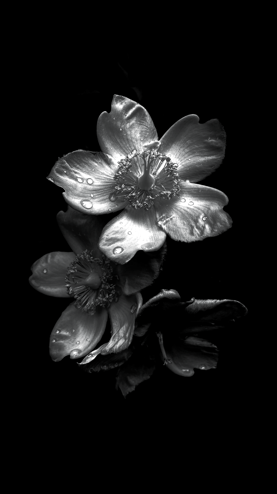
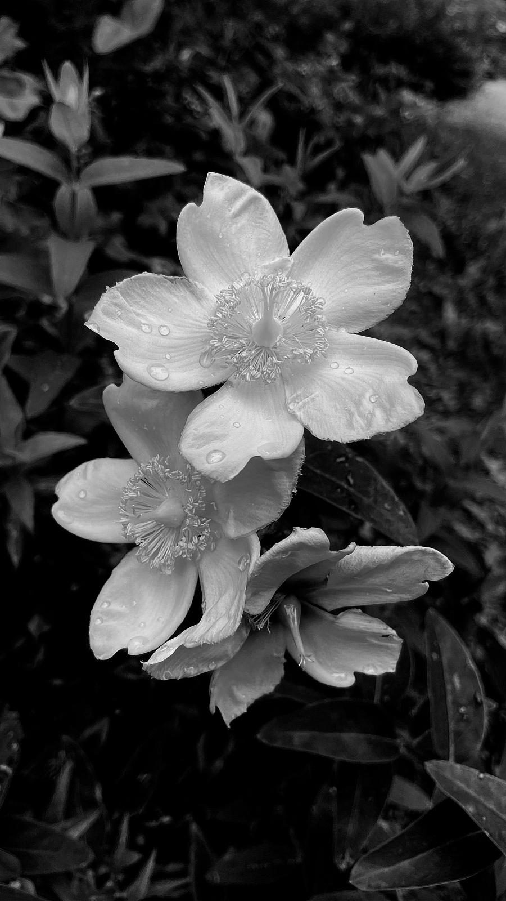

Using Filters vs Black and White Editing
With black and white photography, many people choose filters as a quick and easy solution. It is something that can be applied through your phone's built in apps, or various editing and photo-sharing platforms. This can be incredibly benefical for those trying to create a cohesive aesthetic on platforms like Instagram or for showcasing a consistant syle in portfolios, presentations and other contexts. However, this cohesiveness can also have some limitations if you are relying solely on the filters and not the editing as well. Luckily, the post will delve into some of the positives and negatives of both options, along with an comparison showing the difference that editing your photos can make.
Benefits and limitations of filters
A major benefit to using filters is their easy to use. This makes them a more suitable choice for many because they save time, are more convenient and are accessable for everyone. With filters, people can see instant results, unlike manual editing where each photo needs to be individually edited. In terms of accessability and convenience, the two aspects are closely linked, with many apps now incorporating their own filters within their platforms, making it more convenient for people on the go. This is also a more preferred choice as it enables people to easily edit their photos regardless of their skill level.
However, despite its convenience, a significant drawback of using filters is the limitation of settings. When applying the same filter to all your photos, a uniform setting is applied, which can make some of the photos look less appealing. The generic look created may fit with the invisioned sytle, but that style may not suit every photo. Additionally, filters can cause some elements to get lost or not stand out as well, leading to a loss of details in the overall photo. This is incredibly important in black and white photography, where depth and contrast both play a role in telling the story and drawing and retaining a viewer's attention to the subject. If these qualities are affected by using a filter, manual adjustments are often needed to restore the photo. As a result, this approach can become more time consuming and less convenient then ediiting the photo yourself from the start.
Benefits and limitations of manual black and white editing
Similar to using filters, there are many benefits and limitations to manually editing black and white photos. One key benefit is the increased flexability that manual editting offers. Manual editing allows you to have complete control over all the adjustments make, allowing you to fine-tune all elements of the photo. Unlike filters, this prevents important details from getting lost during the editing process. This preservation can mean the photo itself will often appear to be of higher quality compared to some photos that simply have a filter attached to it. Additionally, manually editing each photo allows you to tailor the edits to highlight the unique characteristics within each image, which can contribute to making the photo seem of higher quality.
In spite of the benefits of manually editing black and white photos, there are notable downsides that should be considered. One major drawback is that the process is incredibly time-consuming. Individually editing each photo can be a painstaking slow task, especially if you have a lot of photos to work through. This task is worsened if you are trying to create a specific cohesive style across your work, as maintaining consistency with manual edits is much harder to achieve and requires a lot more effort and attention to detail. Additionally, there is the risk of over-editing, which can cause the image to look unnatural and can cause the image to lose its natural feel. There is a delicate line between enhancing and preserving details and overdoing adjustments that can accidentally ruin the quality of your work.
Comparison between a manually edited photo and one with a filter
The photo you can see on the left is one that has been manually edited to increase the contrast between the flower and the background. The aim of this edit was to showcase the details on the flower and the water droplets. The photo on the right has a back and white filter added to it but has no further editting added to it.
 